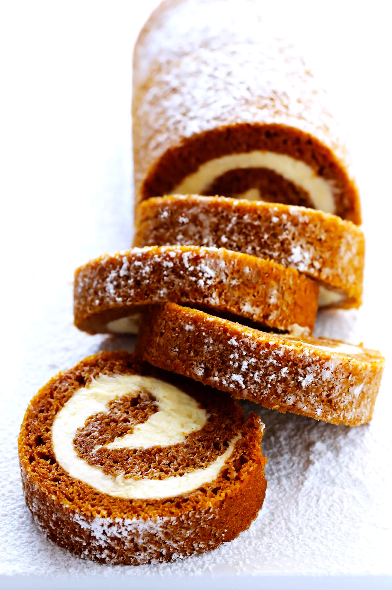

Pumpkin Roll
This classic pumpkin roll recipe is made with a delicious pumpkin cake and heavenly cream cheese filling…and it’s surprisingly easy to make.

Pumpkin Cake Ingredients:
- 3/4 cup all-purpose flour
- 1/2 teaspoon baking powder
- 1/2 teaspoon baking soda
- 2 teaspoons pumpkin pie spice
- 1/4 teaspoon salt
- 3 large eggs
- 1 teaspoon vanilla extract
- 1 cup granulated sugar
- 2/3 cup pumpkin puree
Cream Cheese Filling Ingredients:
- 1 (8 ounce) brick cream cheese, room temperature
- 1 cup powdered sugar, sifted
- 6 tablespoons butter, softened
- 1 teaspoon vanilla extract
Steps
To make the pumpkin roll
- Preheat oven to 375° F. Line a 15 x 10-inch jelly roll pan with parchment paper, leaving an extra 1-inch of parchment sticking up on both 15-inch sides of the pan so that you can easily lift the cake out after baking. (If you’d like the parchment to stick to the bottom of the pan more easily, sprinkle a little bit of water on the pan and then press the parchment paper on top of it. You can also lightly mist the top of the parchment paper with cooking spray for easier cake release afterwards, although it’s not required.)
- Whisk together flour, baking powder, baking soda, pumpkin pie spice and salt in a large mixing bowl until combined.
- In a separate bowl, whisk eggs and granulated sugar for 1 minute until thick. Add in the vanilla and pumpkin, and whisk until just combined. Fold in the flour mixture with a rubber spatula, and stir together until just combined.
- Spread the batter evenly into prepared pan. Bake for 13 to 15 minutes, or until top of cake springs back when touched. Carefully lift the parchment paper and cake out onto a flat (and heat-safe) surface. Then slowly, use your hands to roll the cake — rolling from the short end to the short end — until it is completely rolled up. Transfer the cake roll to a wire rack, and cool until it reaches room temperature.
- While the cake is cooling, make the cream cheese filling (see below).
- Once the cake has reached room temperature, transfer the cake roll to a flat surface, and carefully it until it is flat again (or mostly flat, it’s ok if the ends curl up a bit). Spread the cream cheese mixture evenly over cake, leaving a 3/4-inch border on all sides. Then carefully re-roll the cake, gently peeling away the parchment paper as you roll until you can completely remove and discard it. Tightly wrap the pumpkin roll in plastic wrap and refrigerate at least one hour.
- Remove and unwrap the pumpkin roll and transfer it to your serving dish. Lightly dust the pumpkin roll on all sides with powdered sugar, if you would like. Then slice* and serve.
- If you have leftovers, just re-wrap the pumpkin roll in plastic wrap and store in the refrigerator for up to 5 days. Or freeze for up to 3 months.
To make the cream cheese filling
- Whisk together cream cheese, powdered sugar, butter and vanilla extract in a mixing bowl until smooth. If the filling is too thin, add more powdered sugar. If it is too thick, add a half teaspoon or two of water. (You want a medium consistency so that the filling is easy to spread, but not too warm or thin that it will ooze out of the cake when you’re rolling it up.)